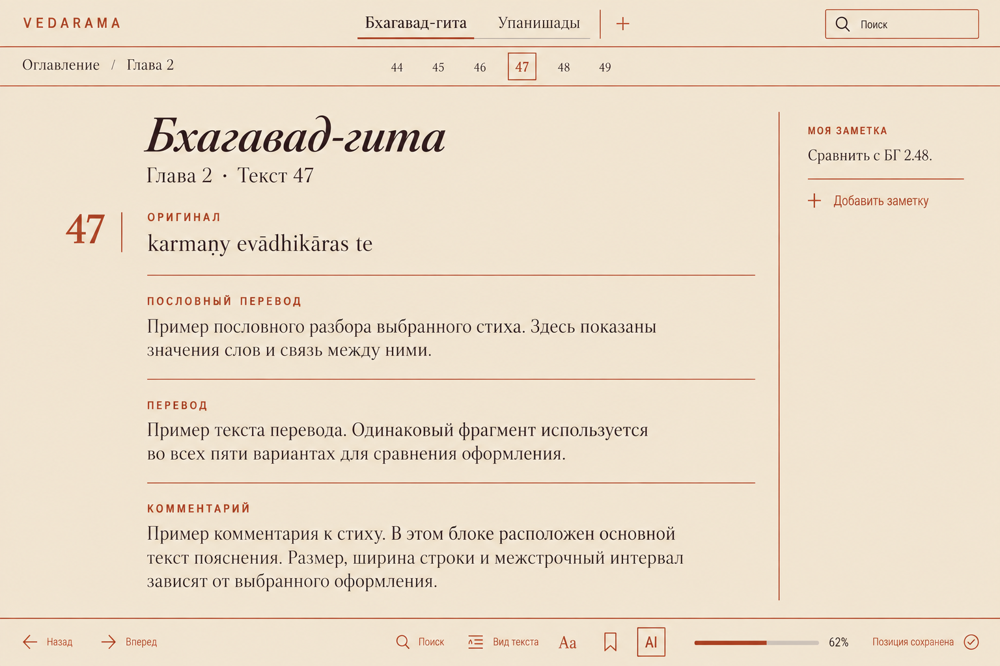
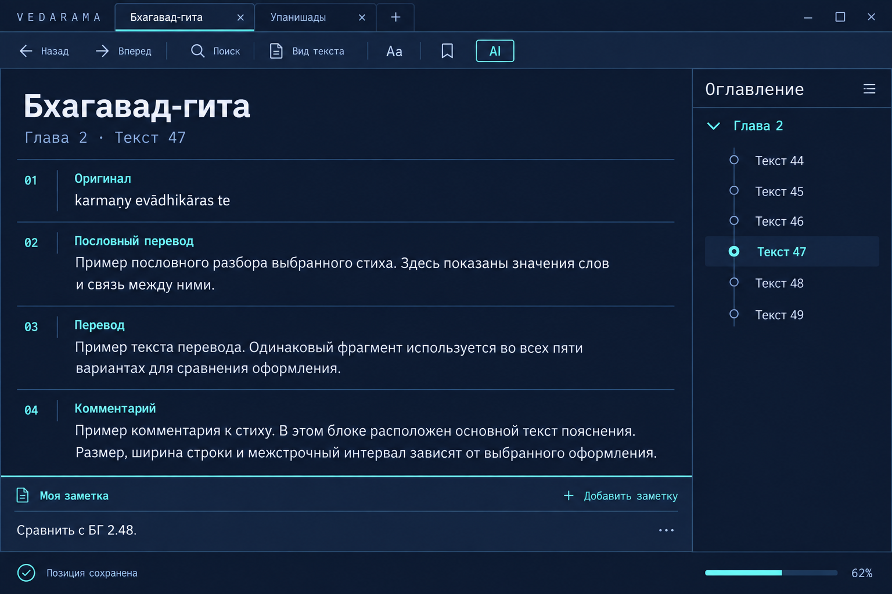

Заметки слева · оглавление снизу · инструменты справа
Во всех вариантах открыта Бхагавад-гита, глава 2, стих 47: четыре текстовых раздела, оглавление и одна заметка. Меняются палитра, типографика, геометрия и расположение блоков.
Заметки слева · оглавление снизу · инструменты справа

Оглавление сверху · заметка на поле
Тёплая бумага, терракотовые акценты, выразительная антиква и тонкие линейки.

Зелёный фон, мягкая типографика, крупные радиусы и плавающие панели.

Тёмный индиго, циан, компактные инструменты и техническая типографика.
Тёплые каменные оттенки, графит и приглушённая бронза. Компоновка и формы лилового концепта сохранены.
Первые пять концептов сохранены отдельно от нового сравнения.